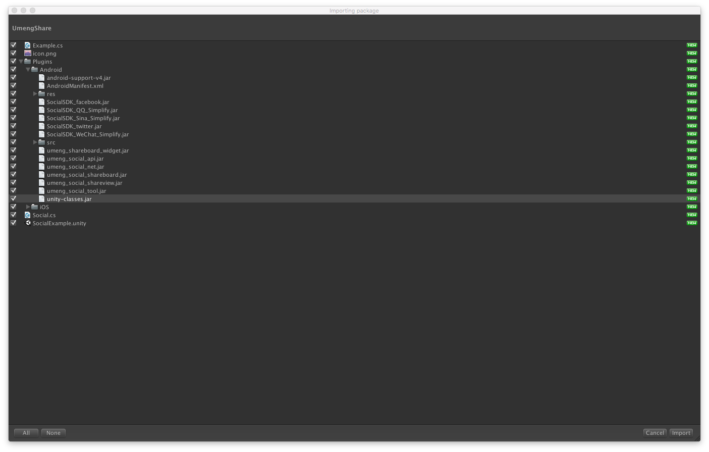
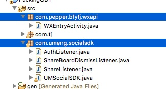
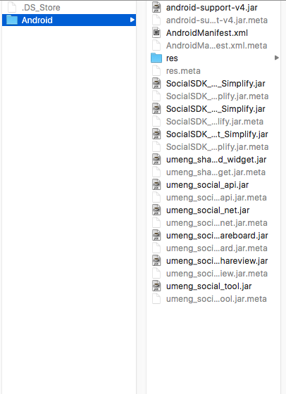

最近几天接入了友盟分享，还是有很多注意点的，这边记录一下。
我接入的版本是
社会化组件Unity3D v6.3.0

这里注意把unity-classes.jar勾选掉，不然会报jar包重复的错误，因为因为编译的时候unity自动链接到自己的class.jar文件。另外其他的jar包和图片资源可以根据自己需求去掉一部分不需要的。
官网的接入指引 是假定我们导出android工程再进行接入的，所以他们的unitypackage才会有unity-classes.jar和一些java 文件。
我们如果直接在unity中打包出apk文件，则需要先在eclipse或者AS中把需要调用的方法打包进jar包中，然后导出来供unity使用。
根据官网指引配置AndroidMainfest。
最好是对照着导入的AndroidMainfest进行配置。
注意以下几点:
- 权限添加
- 友盟Key的更改(iOS端写在了代码里,而android写在了配置文件里)
- 屏幕方向的更改 portrait 还是 landscape 等
- 微信的回调入口activity，改为 自己包名.wxapi.WXEntryActivity (当然这个需要导出对应jar包)
- 检查一遍
// 友盟回调以及初始化key
public void InitUmengKey(String QqKey,String QqSecret,String WeixinKey,String WeixinSecret,String SinaKey,String SinaSecret) {
Log.e("umeng","YXC 初始化Key");
Config.shareType = "u3d";
UMShareAPI.get(this);
Config.REDIRECT_URL = "http://sns.whalecloud.com/sina2/callback";
PlatformConfig.setSinaWeibo(SinaKey, SinaSecret);
PlatformConfig.setQQZone(QqKey, QqSecret);
PlatformConfig.setWeixin(WeixinKey,WeixinSecret);
}
@Override
protected void onActivityResult(int requestCode, int resultCode, Intent data) {
// TODO Auto-generated method stub
super.onActivityResult(requestCode, resultCode, data);
UMShareAPI.get(this).onActivityResult(requestCode, resultCode, data);
}
为什么刚刚更改AndroidMainfest的时候没有更改对应的Activity的名字呢，友盟很聪明的将调用都写成了静态类，这样我们只需打开他的src文件直接导出jar包就能直接调用了，只有微信回调入口的activity需要注意下。
如图，导出这两个jar包


这个在导入umengshare.package的时候就会自动导入
友盟建议继承application并在里面配置分享的Key，但是这样就不方便在unity端更改key，所以我自己写了初始化key的方法
using UnityEngine;
using System.Runtime.InteropServices;
using System;
using System.Collections.Generic;
public class UshareCallAndroid
{
public static void InitUmengKey (string[] key)
{
#if UNITY_ANDROID
using (AndroidJavaClass unityPlayer = new AndroidJavaClass("com.unity3d.player.UnityPlayer")) {
AndroidJavaObject curActivity = unityPlayer.GetStatic<AndroidJavaObject> ("currentActivity");
Debug.Log ("YXC" + " Umeng Call android InitKey");
curActivity.Call ("InitUmengKey", key [0], key [1], key [2], key [3], key [4], key [5]);
}
#elif UNITY_IPHONE
InitUmengKeyiOS (key [0], key [1], key [2], key [3], key [4], key [5], Myparameters.Umeng_key);
#endif
}
[DllImport("__Internal")]
static extern void InitUmengKeyiOS (string QqKey, string QqSecret, string WeixinKey, string WeixinSecret, string SinaKey, string SinaSecret, string UmengKey);
}
调用一定要先保证InitUmengKey后再调用友盟social脚本里的分享方法。可以参考TjSdk工程里的UmengShare.cs的调用。
- 在使用新浪分享的时候报redirect url错误，可以去新浪后台核实回调地址是否正确。
- sso package error 签名错误，核实新浪后台签名是否正确。
核实方法，
可以在手机安装需要需要接入新浪分享的安装包，
然后下载MD5签名查看apk，输入对应包名。
对比得到的签名是否与新浪后台填写的一致。